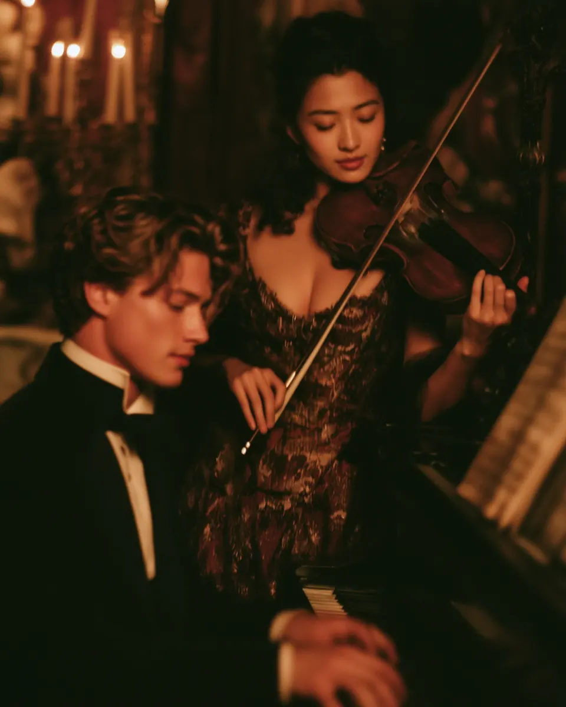
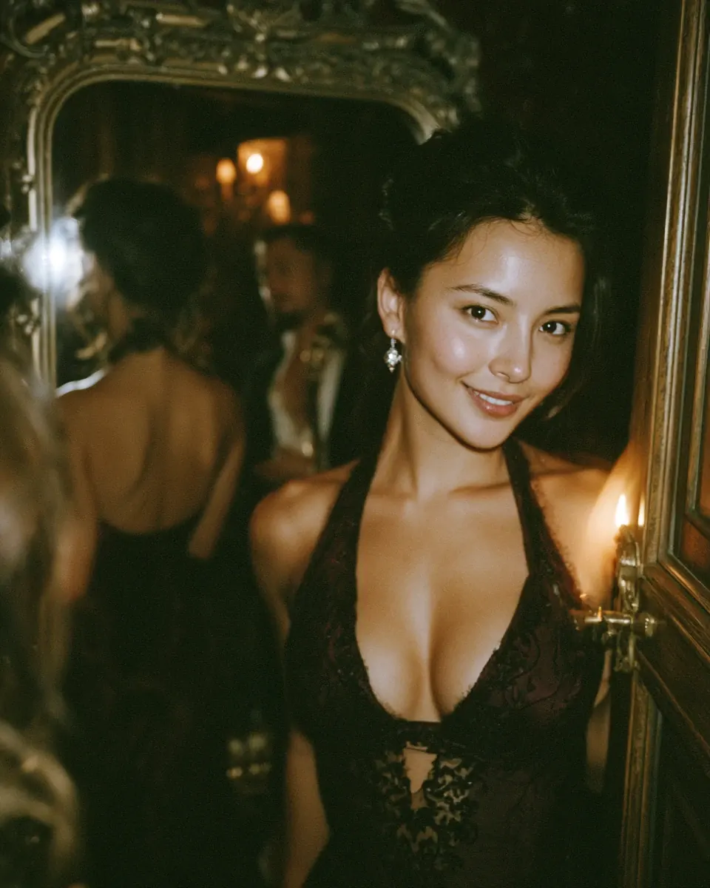

LISTEN CLOSESTAY LATEPIANO IN A LOFTJAZZ, LATESTRINGS & POURGALLERY AFTER HOURSLISTEN CLOSESTAY LATEPIANO IN A LOFTJAZZ, LATESTRINGS & POURGALLERY AFTER HOURS
01
NOT A CONCERT.
A night.
Seattle has plenty of places to go and not enough reasons to talk. So we made one. Once a month we take over a beautiful room: a loft, a gallery, a house with a grand piano, and put live music in it.
And we know why you’re really here. Profiles feel like homework. Chats die by Thursday. First dates feel like interviews. So we built the opposite: one candlelit room, forty people who said yes to the same night, and something beautiful to talk about that is not the weather.
Every night runs in two acts. The Set: thirty minutes, performers we book, close enough to hear the breathing. Phones down, lights low, one pour in hand.
Then The After. The bottles open, the room loosens, and you are standing next to someone who just felt exactly what you felt. There is no better opening line. That is the club.

02
THE NIGHTS
A season, give or take.
- Piano in a Loft
- Jazz, Late
- Strings & Pour
- Gallery After Hours
03
HOUSE RULES
Four. That’s all.
Rooms are capped at fifty. Members bring one guest, and everyone arrives on someone’s word.
- The Set gets thirty minutes of your full attention. Phones down.
- Come alone or bring one. Both are correct.
- No name tags. No pitches. LinkedIn can wait until Monday.
- The room is off the record.
STRANGERS AT EIGHT.
Not by ten.
04
GET IN
Two sentences. Make them count.
The last live music that gave you chills, and who sent you. If nobody sent you, make the two sentences count.
Dress like you might meet someone.
